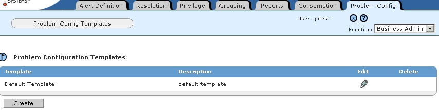

Creating Problem Configuration Templates
Problem Configuration Templates can be created only by users who have the Business Admin function.
To create a
problem
configuration
template
1 In the Functions drop-down list, select Business User.
2 Click the Problem Config tab. The Problem Configuration Templates page appears.

3 Click Create. The Create Configuration Template dialog box appears.
4 Enter a unique name and a meaningful description, then click Submit. The Edit
Problem Configuration Template page appears.
5 Define the inclusion strategy, business goals, and constraints for the template:
6 Click Save.